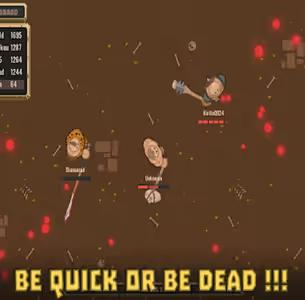
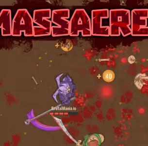
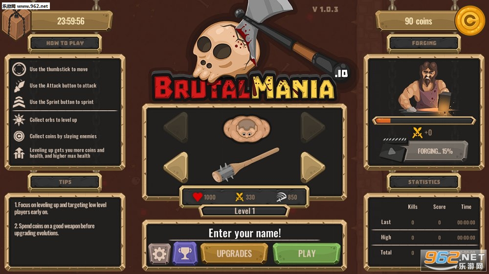
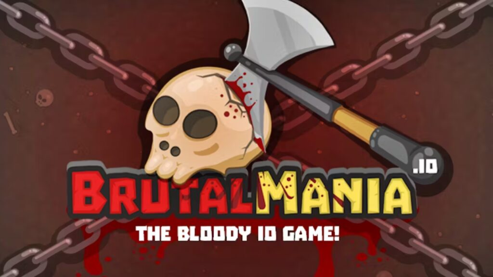

BrutalMania.io is pure, unfiltered arena chaos. You pick up weapons scattered across the map, fight other players, and whoever survives longest wins. No progression, no upgrades—just raw combat skill. I spent my first dozen matches getting destroyed before it clicked. This guide will help you skip that frustrating learning curve.
🎯 Game Basics

The Arena
BrutalMania.io drops you into confined arenas with various obstacles. Walls, crates, and terrain features create cover and chokepoints. Knowing the map layout is half the battle.
Respawn System
When you die, you respawn with basic weapons. The arena continuously spawns better weapons at fixed locations. Rushing high-tier weapons is tempting but dangerous—expect ambushes at popular spawn points.
Match Structure
Most matches end after a time limit or when only a few players remain. Survival is key, but aggressive play earns more kills. Balance risk and reward based on your goals.
🔫 Weapons Guide

Tier 1: Starting Weapons
You typically spawn with basic firearms. These work fine for close encounters but lack stopping power at range.
- Pistol - Low damage, moderate fire rate, decent accuracy
- Knife - High damage but requires melee range
Tier 2: Mid-Tier Gear
Shotguns and SMGs appear regularly. These weapons dominate mid-range combat and can turn fights quickly.
- Shotgun - Devastating at close range, useless far away
- SMG - High fire rate, lower accuracy, sprays bullets
- Assault Rifle - Balanced option for various distances
Tier 3: Power Weapons
Rare weapons spawn less frequently but dominate the battlefield. If you grab one, protect it.
- Rocket Launcher - Massive area damage, slow reload
- Sniper Rifle - One-shot kills, requires precision
- Flamethrower - Sustained damage in close quarters
High-tier weapons often have limited ammo. Don't waste shots on distant targets you probably can't hit anyway. Save ammunition for fights you can win.
🏃 Movement Tactics

1. Never Stay Still
Stationary players are easy targets. Always be moving, even if you're just strafing left and right. Makes you harder to hit and signals "I'm alert" to potential attackers.
2. Use Cover Smartly
Duck behind walls between shots. Pop out, fire, retreat. Don't expose yourself for longer than necessary. The player who wastes less time out of cover wins exchanges.
3. Bunny Hopping
Jump while moving to make yourself an unpredictable target. Combined with strafing, this movement pattern is incredibly hard to track. Feels silly but works.
4. Sound Awareness
Listen for footsteps, weapon sounds, and reloads. Audio cues reveal enemy positions before you see them. Headphones help immensely in this game.
⚔️ Combat Strategies
1. Pick Your Fights
Not every engagement is worth taking. If you're low health and spot an enemy across the map, let them be. Rushing in guarantees your death more often than not.
2. Flanking Maneuvers
Instead of charging head-on, circle around obstacles to attack from unexpected angles. Catching someone from behind while they're focused forward is an instant kill.
3. Third-Party Everything
Let other players fight first. When they're both damaged from their exchange, swoop in and clean up. Third-partying is arguably the most effective strategy in BR modes.
4. Weapon Switching
Carry two weapons for different situations. A long-range option and a close-range backup covers more scenarios. Swap based on the engagement distance.
5. The Pincer Move
In team modes, coordinate with teammates to approach from multiple directions. Surrounded opponents can't cover all angles simultaneously. This guarantees kills on fortified enemies.
6. Sound Tracking
Gunfire, footsteps, and reloading all produce audio cues. Experienced players track enemies by sound alone. Train your ears to identify weapon types and approximate distances from audio alone.
7. Pre-aiming Corners
Anticipate where enemies will appear and pre-aim those positions. When you round a corner already aimed at the likely enemy location, you gain precious reaction time. This split-second advantage often decides fights.
8. Resource Awareness
Always know your ammo count and weapon status. Running dry mid-fight is catastrophic. Keep mental track of pickups and plan weapon switches before you're caught empty.

💎 Pro Tips
Learn weapon spawn timings. High-tier weapons respawn at fixed intervals. Knowing when and where to expect them gives you positioning advantages.
Lead your shots on moving targets. Most weapons have travel time. Aim where enemies are going, not where they are, especially with slower weapons.
Check corners before entering. Clear each corner systematically. Rushing through doorways without checking is an easy way to get spawn-killed or ambushed.
Use the environment for kills. Sometimes the best strategy is forcing opponents into tight spaces where their ranged advantage disappears.

❓ Frequently Asked Questions

How do I get better weapons in BrutalMania.io?
Weapons spawn at fixed locations throughout the arena. Check the map for spawn points and time your movement so. Higher-tier weapons appear less frequently but at predictable intervals.
What's the best starting strategy?
Grab nearby weapons immediately and find defensive positions. Let early chaos eliminate other players while you secure better gear. Don't rush center areas where everyone converges.
Should I play aggressively or defensively?
Both approaches work, but defensive play typically yields better survival rates. Aggressive play earns kills but increases your death risk. Adjust based on your skill level.
How do I counter shotgun users?
Maintain distance. Shotguns dominate close range but fall off sharply at mid-range. Strafe while shooting to prevent them from landing full spread hits.
Can I play with friends?
Yes, create a party and invite friends before starting a match. Teamwork changes the meta significantly—you can cover each other, share weapons, and coordinate attacks.
Why do I keep dying immediately after spawning?
Experienced players camp spawn points waiting for newcomers. Spawn in different locations or wait a few seconds before moving after respawning.
📝 Related Games to Try
Love arena combat? Try Krunker.io for fast FPS action, Surviv.io for battle royale survival, or Shell Shockers for egg-based shooter chaos.
📝 Conclusion
BrutalMania.io rewards quick reflexes and smart positioning. Weapons knowledge, movement skills, and knowing when to engage separate winners from losers. Practice consistently and you'll climb the ranks.
Jump into the arena and start fighting! Every death teaches you something—until then, good luck.
Last updated: January 20, 2024
Written by the iogameguide.com team